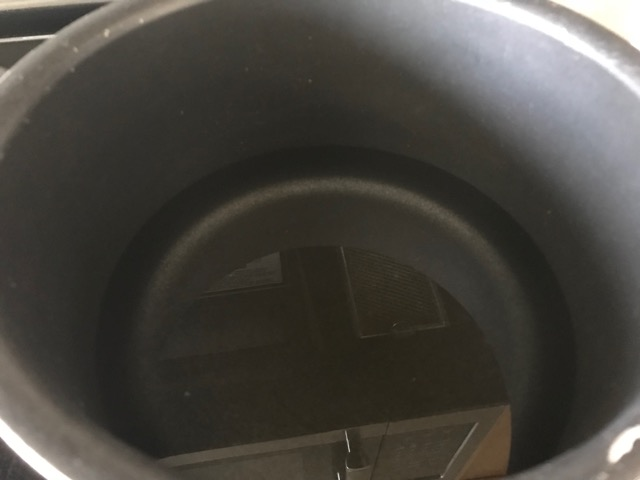
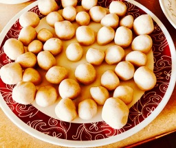
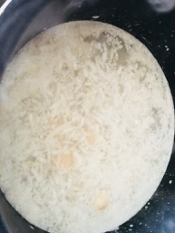
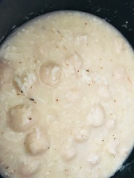

                                    <figure class="recipePage">                                       
                                        <figcaption class="caption">
                                        
                                            <!--  Copy your recipie in here -->

                                            <h1><span style="color: #ff6600;">Pidi with chicken</span></h1>
<p>&nbsp;</p>
<p><strong>Ingredients</strong></p>
<ul>
<li>Brown rice flour 4 cups</li>
<li>Coconut 2 cups</li>
<li>Cumin dry roasted and powdered 1 tsp</li>
<li>Shallots finely crushed 1 tbsp</li>
<li>Garlic finely crushed 1 tbsp</li>
<li>Salt 2 tsp</li>
<li>Water as required&nbsp;</li>
</ul>
<p><strong>Method</strong></p>
<p>Dry roast the rice flour on medium heat till it starts to change color. About 3 - 4 minutes. Let it cool. In a bowl mix the rice flour, crushed shallot and garlic.</p>
<p>Boil water in a saucepan and add a tsp of salt. Pour the boiling hot water on to the rice flour just enough to make a dough like a roti dough. Mix with a spatula. Let it rest till it cools down enough to knead with hands. Knead the dough, make small balls and set aside.</p>
<p>In a deep dish boil water just enough to cook the rice dumplings.</p>
<p></p>
<p>As the water comes to a rolling boil, add a tsp of salt and coconut. Slowly drop the rice balls into the water.</p>
<p></p>
<p>Let it cook for about 10 minutes occasionally stirring the broth with extreme care not to break them apart.</p>
<p></p>
<p>Take off heat when the broth thickens, and the dumplings are cooked. Let it cool.</p>
<p></p>
<p>Serve with chicken curry!</p>
<p>&nbsp;</p>
<p>&nbsp;</p>

                                            <!-- Copy Up to here-->

                                        </figcaption>
                                      
                                    </figure>
                                    